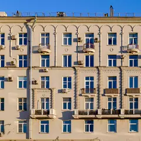

Фудхолл · ЦАО
Chima
Азиатский фудхолл из нескольких корнеров: Китай, Вьетнам, Япония, Бурятия, Ближний Восток, десерты и коктейли; удобно собраться компанией.
- ₽₽ · 1 500–3 000 ₽ на человека
- Новое в каталоге
- в 3 планах
Позвать сюда: ChimaОткрыть в каталоге: ChimaМаршрут до места: Chima
Адрес и детали
- Адрес
- Болотная наб., 15, стр. 3
Открыть на Яндекс Картах (в новой вкладке) - Метро
- м. Полянка
- Округ
- Центр (ЦАО)
- Цена
- 1 500–3 000 ₽ на человека
- Проверено
- работает — проверили в ноябре 2026
Планы с этим местом 3
- ГЭС-2 · Дом культуры · м. Кропоткинская
- 1 минута пешкомChima · Фудхолл
Выставки в ГЭС-2, а фудхолл Chima совсем рядом на Болотной — каждый выберет свою кухню.
Открыть план: ГЭС-2 и азиатский ужинПозвать сюда: ГЭС-2 и азиатский ужин
Фото: Юрий Д.К., CC BY 4.0 · Wikimedia Commons

- Chima · Фудхолл · м. Полянка
- 4 минуты пешкомKaraoke Pro · Караоке-клуб
Поужинать компанией в азиатском фудхолле и через три минуты пешком перейти в караоке.
Открыть план: Караоке и фудхоллПозвать сюда: Караоке и фудхолл
Фото здания: Никонико962, CC BY-SA 4.0 · Wikimedia Commons
- Патриарший мост · Пешеходный мост · м. Кропоткинская
- 4 минуты пешкомКрасный Октябрь · Бывшая фабрика
- 5 минут пешкомChima · Фудхолл
Встретить закат на Патриаршем мосту, пройтись по Красному Октябрю и поужинать в Chima — всё в пяти минутах.
Открыть план: Мост, Красный Октябрь и ChimaПозвать сюда: Мост, Красный Октябрь и Chima
Фото: NVO, общественное достояние · Wikimedia Commons


Похожие рядом


Что ещё рядом


Как позвать
- Выбери план, место или событие — в карточке адрес, цены и маршрут в Яндекс Картах.
- Нажми «Позвать сюда» — соберётся приглашение-игра для свидания или голосование для компании.
- Отправь ссылку в любой мессенджер: тебе ответят, а компания отметит, куда и когда может. Бесплатно и без регистрации.